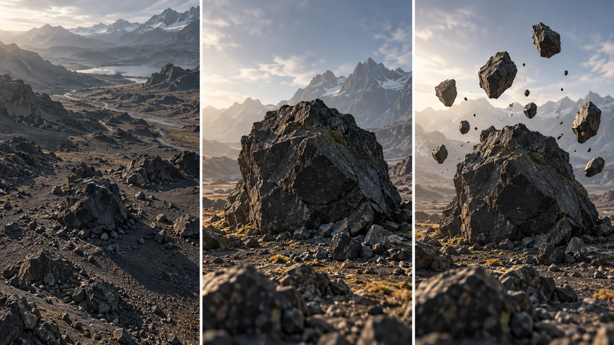

G27 · 고급 · 일반 드론
ANOMALY: 바위 오빗을 무중력 세계로 바꾸기
합성할 움직임을 먼저 정하고 추적 가능한 배경과 대안을 확보하는 법을 배운다.
그림에서 확인할 세 가지실사와 가상 요소의 역할을 촬영 전에 나눈다.
1실제 공간의 기준
왼쪽 계곡의 강줄기와 멀리 이어진 산을 본다. 합성 장면에서도 바닥과 먼 지형이 안정적인 공간의 기준으로 남아야 한다.
2주요 바위의 형태
가운데 큰 바위의 윤곽과 뒤쪽 산의 겹침을 확인한다. 무엇이 변형될 대상이고 무엇이 위치를 판단할 배경인지 나누어 읽는다.
3떠오른 조각의 관계
오른쪽 바위 조각의 크기와 간격, 아래에 남은 바위를 함께 본다. 조각만 보기보다 하나의 덩어리에서 분리된 것처럼 이어지는지 판단한다.
촬영 설계
촬영을 이렇게 설계한다
효과가 필요한 장소를 찾는다
제작진은 사전 시각화와 장소 조사로 무중력 장면의 방향을 준비했다. 교육 적용에서는 떠오를 물체와 남아 있을 배경을 구분하고 두 요소의 겹침을 촬영 전에 검토한다.
후반 추적을 고려해 촬영한다
인터뷰는 해변 바위를 중심으로 한 회전 촬영과 이후 카메라 추적·왜곡 보정 과정을 설명한다. 촬영의 움직임은 합성 물체가 실제 공간에 붙어 보이게 만드는 입력이 된다.
불가능한 촬영에 대안을 둔다
제작진은 바람 때문에 비행하지 못한 장소와 지상 짐벌로 공중 시점을 대신한 상황을 소개한다. 교육 적용에서는 고집할 효과와 바꿔도 되는 촬영 방법을 먼저 나눈다.
ANOMALY 제작진이 아이슬란드 풍경을 무중력 세계로 바꾼 촬영과 후반 과정이다.
원본 영상ANOMALY: 바위 오빗을 무중력 세계로 바꾸기
1. 실사와 효과의 접점
원본에서 떠오르는 물체와 남아 있는 지형의 경계를 관찰한다. 그림자·겹침·크기 변화가 한 공간처럼 이어지는지 판단한다.
2. 카메라 이동의 역할
카메라가 움직일 때 합성 물체의 위치가 배경에 비해 어떻게 바뀌는지 살핀다. 이동이 효과의 입체감을 돕는지 확인한다.
3. 장면의 반복 규칙
서로 다른 장소에서도 무중력이라는 발상이 어떻게 유지되는지 찾아본다. 같은 효과를 반복하는 것과 하나의 세계를 만드는 것을 구분한다.
재생이 제한되면 원본 영상 새 창을 이용하세요.
제작진 설명 · 한국어 요약 번역
사전 시각화와 역할 분담으로 기획을 구체화하다
기획과 시각화
번역 요약: Kliesch는 기존 아이슬란드 드론 영상과 다른 여행 영상을 목표로 기획했다.
장소 조사 자료와 포토샵 시각 초안으로 콘셉트를 먼저 제시했다.
촬영 일정
촬영은 2017년 10월부터 약 2주 반 동안 진행했다.
역할과 후반
기획과 촬영, 편집, 색보정은 본인이 맡고 시각효과는 Wildboar 3D Studio가 맡았다.
약 450GB 영상 중 효과 장면을 표시해 보냈고 작업에 2개월에서 3개월이 걸렸다.
제작진 설명 · 한국어 요약 번역
바위 오빗을 추적하고 절차적 요소로 합성하다
촬영 방식
번역 요약: 핵심 컷은 Phantom 4 Pro를 Point of Interest 모드로 바위 둘레에 돌려 촬영했다.
합성 파이프라인
Wildboar는 Nuke에서 카메라를 추적하고 렌즈 왜곡을 보정했다.
Houdini로 절차적 바위와 얼음 조각을 만들어 Mantra로 렌더링했다.
합성과 로토스코핑은 Nuke에서 했고 절차 설정을 재사용해 파편을 다양하게 만들었다.
대체 촬영
화산 분화구에서는 강풍으로 드론을 띄우지 못해 머리 위로 든 핸드헬드 짐벌로 대신 촬영했다.
Kling 프롬프트단문 인과 체인 · 16:9
내가 직접 만들어 본다
바위 조각만 떠오르고 계곡과 먼 산은 고정된 기준으로 남는 인과를 지시한다.
- S01해변 계곡에 큰 바위가 서 있고 멀리 산이 이어진다.
- S02영상은 하나의 연속 쇼트다.
- S03처음 10초 동안 드론이 바위 둘레를 천천히 돈다.
- S04드론이 돌기 때문에 바위 뒤의 산이 천천히 옮겨 간다.
- S05계곡과 먼 산은 흔들리지 않고 바닥의 기준으로 남는다.
- S06다음 10초 동안 바위 윗부분이 덩어리에서 갈라진다.
- S07갈라진 조각이 천천히 위로 떠오른다.
- S08드론이 계속 돌기 때문에 조각이 바위 뒤 산과 겹쳤다 벗어난다.
- S09조각은 공중의 한 자리에 붙은 것처럼 보인다.
- S10마지막 10초 동안 아래 바위는 땅에 그대로 남는다.
- S11그래서 떠오른 조각과 남은 바위의 간격이 분명해진다.
- S12조각은 하나의 덩어리에서 떨어져 나온 모양으로 이어진다.
[네거티브]
- 바위가 너무 작거나 산과 계곡이 사라지는 것 금지
- 중간에 컷이 생기며 장면이 바뀌는 것 금지
- 드론이 바위에서 멀어져 직선으로 날아가는 것 금지
- 바위 뒤의 산이 움직이지 않고 평면처럼 붙어 있는 것 금지
- 계곡과 산이 함께 떠오르거나 일렁이는 것 금지
- 바위 전체가 한꺼번에 폭발하듯 흩어지는 것 금지
- 조각이 빠르게 튀어 오르거나 아래로 떨어지는 것 금지
- 조각이 시점과 상관없이 화면에 붙어 따라다니는 것 금지
- 조각이 카메라와 함께 미끄러지듯 흔들리는 것 금지
- 아래 바위까지 함께 떠올라 기준이 사라지는 것 금지
- 조각과 바위 사이 간격이 흐릿하게 뭉개지는 것 금지
- 조각의 윤곽이 바위와 전혀 다른 물체로 보이는 것 금지
결과에서 볼 것
- 바닥과 먼 산이 안정된 기준으로 남았는가
- 떠오른 조각이 시점 변화에 맞춰 공간에 붙어 보였는가
- 조각과 남은 바위가 한 덩어리에서 나온 듯 이어졌는가